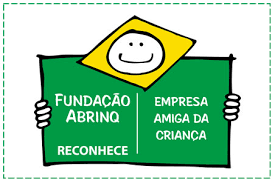
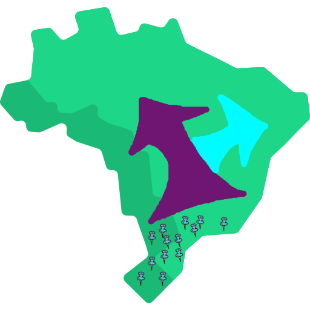
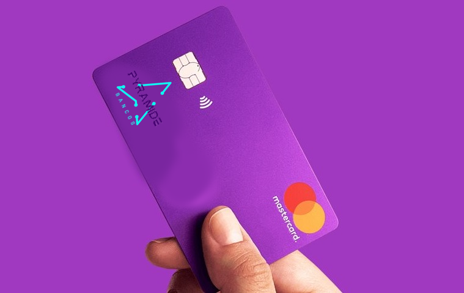
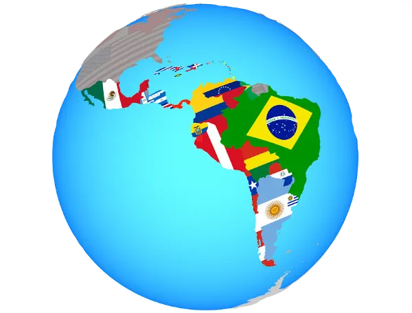

2013: Fundação do Banco PyramideEm 2013, o Banco Pyramide foi fundado por um grupo de empreendedores visionários que buscavam criar uma instituição financeira que oferecesse serviços inovadores e atendimento personalizado aos clientes. Começaram com uma única agência em uma pequena cidade. |
|
|  | |
2014: Primeiras Parcerias LocaisNo segundo ano de operações, o Banco Pyramide estabeleceu suas primeiras parcerias com empresas locais, oferecendo soluções financeiras sob medida para pequenos negócios e empreendedores. |
|
2015: Lançamento da Plataforma OnlineEm 2015, o Banco Pyramide lançou sua plataforma online, permitindo que os clientes acessem suas contas, façam transações e gerenciem suas finanças remotamente. Isso ampliou significativamente sua presença e comodidade. |
 |
|  |
2018: Expansão NacionalEm apenas cinco anos, o Banco Pyramide expandiu rapidamente, abrindo agências em várias cidades do país. Sua abordagem centrada no cliente e serviços de qualidade começaram a atrair uma base de clientes leais. |
2021: Programa de RecompensasPara recompensar a fidelidade dos clientes, o Banco Pyramide introduziu um programa de recompensas em 2021. Os clientes passaram a ganhar pontos em cada transação, o que podiam trocar por produtos, viagens e benefícios exclusivos. |
 |
|  |
2023: InternacionalizaçãoO Banco Pyramide deu início à sua expansão internacional em 2023, abrindo agências em países vizinhos. Isso o tornou uma presença global no setor bancário. |